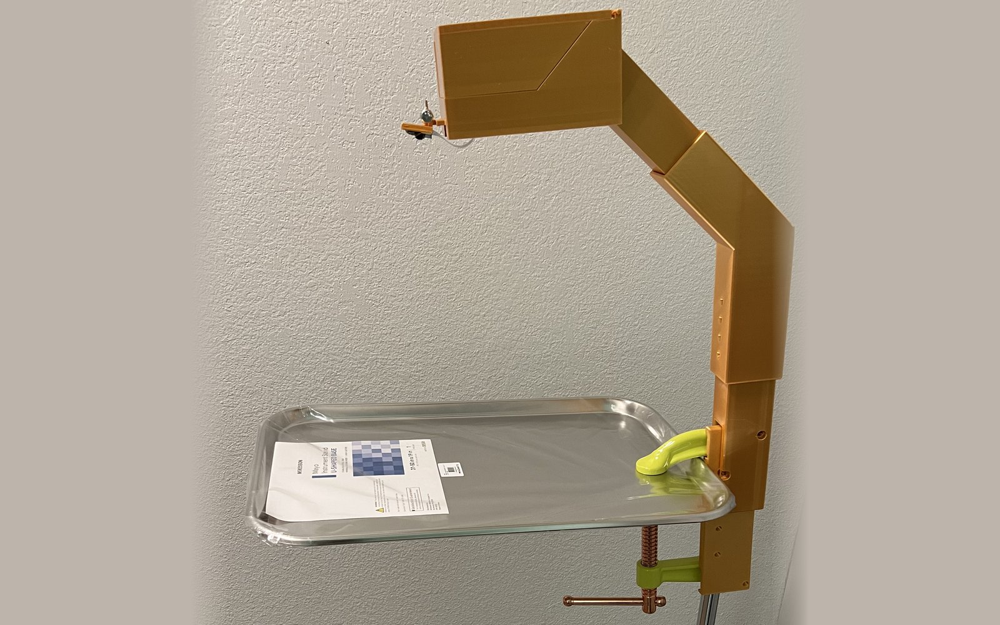

UF Dream Team Engineering · Team captain
Operating Room Table Attachment
An adjustable, sterilizable camera attachment that clips onto a Mayo stand or back table and records which surgical tools are actually used, so hospitals can stop sterilizing instruments that never get touched.